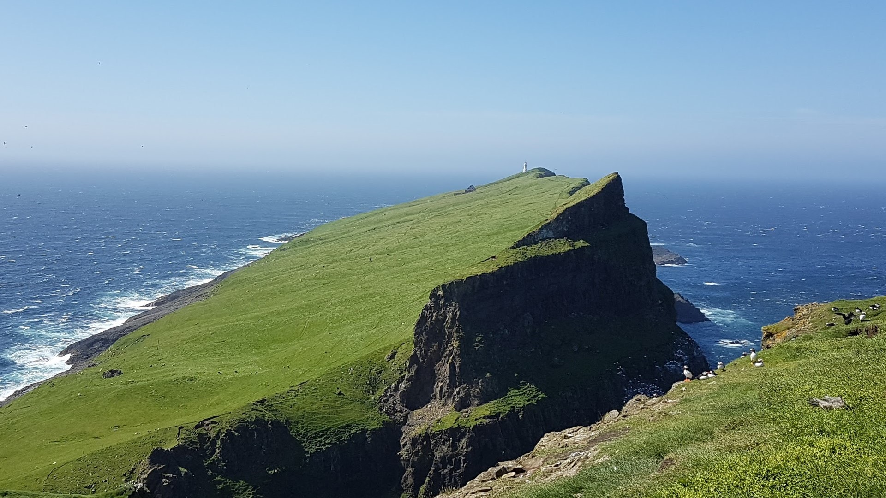

Welcome to the personal website for Erlend Dancke Sandorf
Marie Sklodowska-Curie Research Fellow, Environmental Economist and Choice Modeller

The INSPiRE Project
The project aims to understand how searching for information about policy alternatives affects stated preference formation, learning and choice.
Read more
Sustainable Acquaculture in Vietnam
The results of the project will provide policy guidance on how to transition from conventional to high-tech shrimp farming by exploring both the supply and demand side of the policy.
Read more